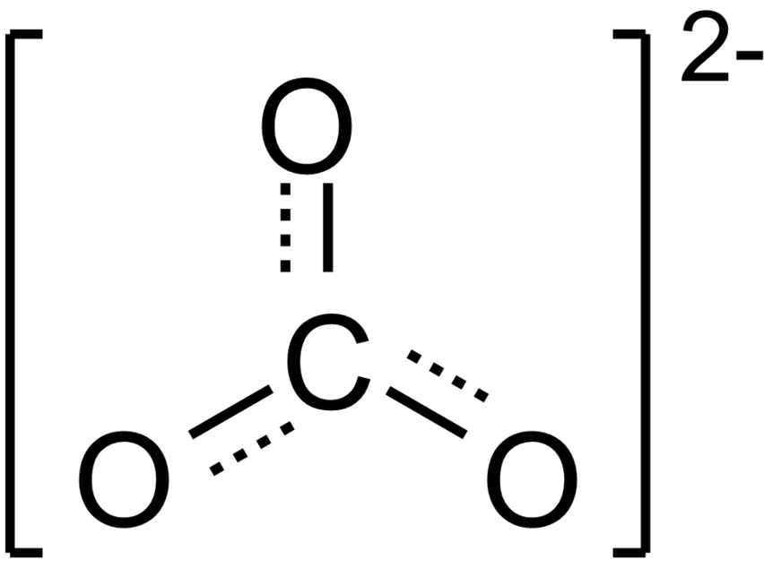
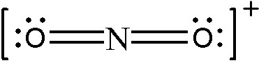

There will be certain molecules for which 1 Lewis structure will not be able to represent the molecule properly. For example, take a look at the `CO_3^(2-)` ion:
How does the double bond "choose" which oxygen out of the three oxygens to bond to? It could just as easily have chosen the right oxygen or the left oxygen.
This is one example of when one structure is not sufficient to describe all the possible molecular orientations. In cases like this, chemists use resonance structures to represent all possible structures. The resonance structure for `CO_3^(2-)` looks like this:
The double tipped arrows indicate that the true structure shifts back and forth between each contributing structure. First, the double bond is on the top O, then it shifts over to the right O, and then the left O. The correct Lewis structure consists of all of the contributing structures.
Now, contributing structures are not entirely correct. If they were, we would be able to measure, in the lab, 1 bond being shorter than the other 2 at all times (remember that double bonds are stronger and therefore shorter than single bonds). Despite all efforts and many experiments, this was never measured. Instead, it was measured that each of the bonds were slightly shorter than a single bond usually is. It turns out that the actual structure is a combination of all the contributing structures. The contributing structures indicate that there is 1 double bond and 2 single bonds at all times, but in reality the bonds are an in-between of a single bond and a double bond. This is a pretty weird concept to think about, since so far we've only talked about whole numbered bonds.
The concept of a bond order will hopefully help to clear up this weird concept. The bond order is the metric used to determine the stability of a bond. A higher bond order indicates a stronger/more stable bond. A single bond has a bond order of 1, a double bond 2, and a triple bond 3. Resonance structures are sometimes drawn in this alternate form where partial bonds are drawn instead of the individual contributing structures.
Each of the C-O bonds consist of a solid line with a dotted line alongside. The dotted line indicates a "partial bond" of sorts, which simply means that the bond order is not a whole number. Bond order is calculated as follows:
` BO = ("Number of bonds")/("Number of bonded groups")`
We can calculate this for the `CO_3^(2-)` molecule. If you look back at the contributing structures, there are a total of 4 bonds distributed amongst 3 bonded groups. The bond order is therefore `(4 "bonds")/(3 "bonded groups")=1.33`. This means that the C-O bond has a strength somewhere between a single bond and a double bond.
#1. Calculate the bond order for the `NO_2^+` ion.
First step is to draw the Lewis structure.
Now calculate the bond order using the above formula. There are 4 bonds distributed amongst 2 bonded groups:
`BO = (4 "bonds")/(2 "bonded groups")=2`
Often times there will be several different possible contributing structures. There are a few rules to determine which of the contributing structures is the most stable, or most likely to exist:
The lower the overall formal charge, the more stable the structure.
Negative charges should be on the most electronegative atoms.
Positive charges should be on the least electronegative atoms.
Resonance allows us to draw molecules that cannot be represented by a single structure.
The correct Lewis structure involves all of the contributing structures.
The bond order is a measure of the average stability of the bonds. The higher the bond order, the more stable the bonds.